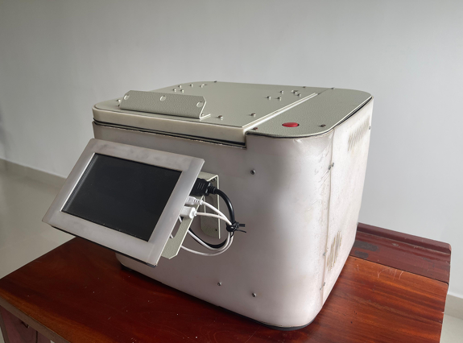
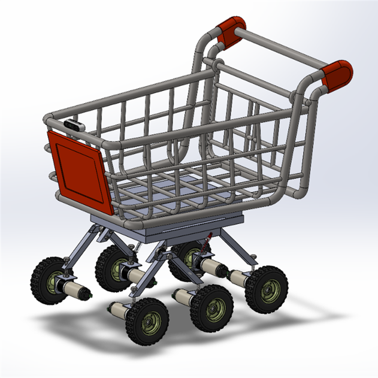
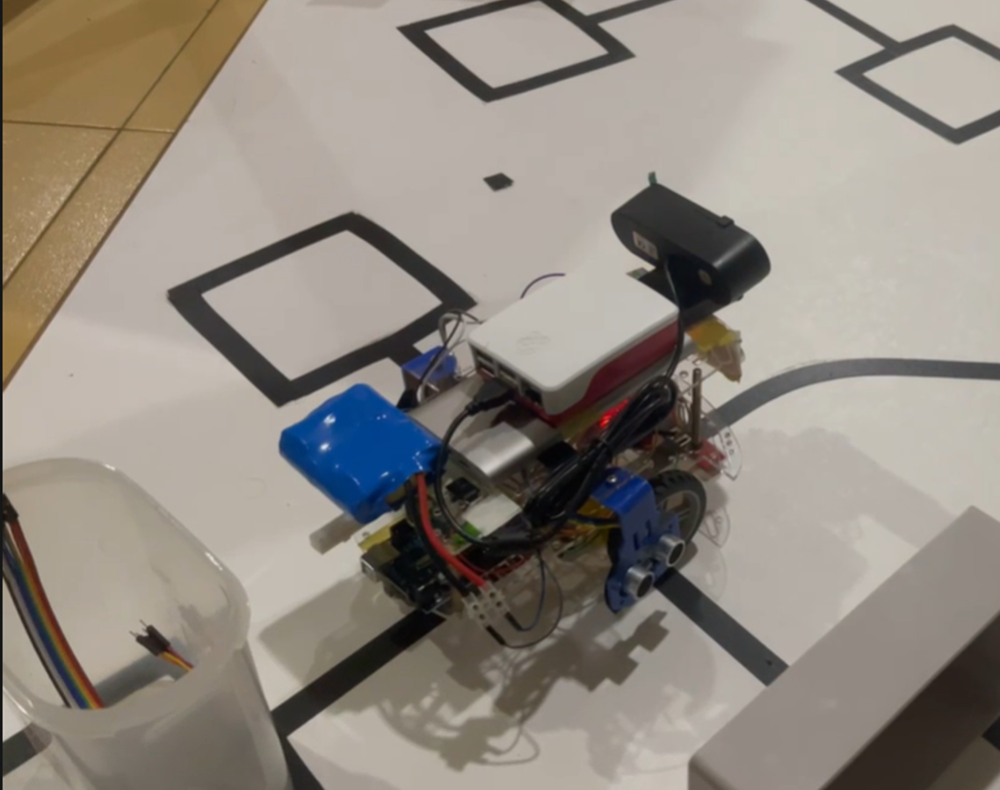
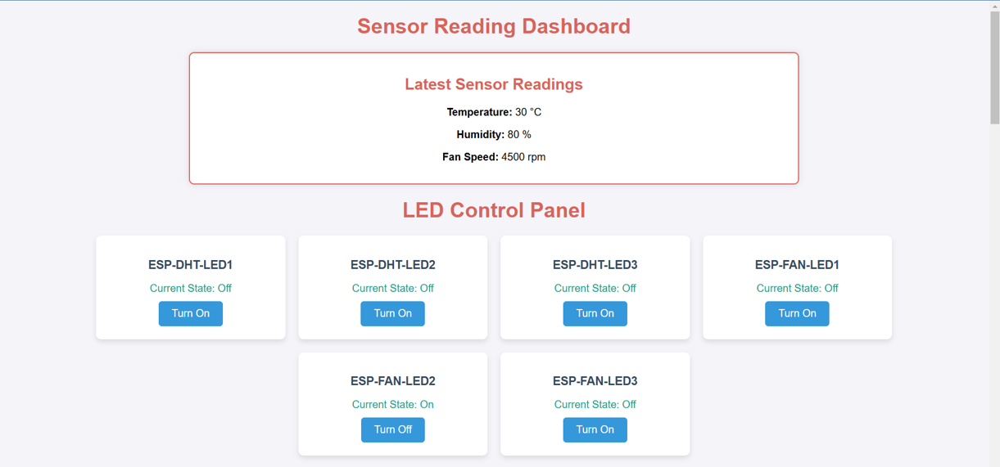
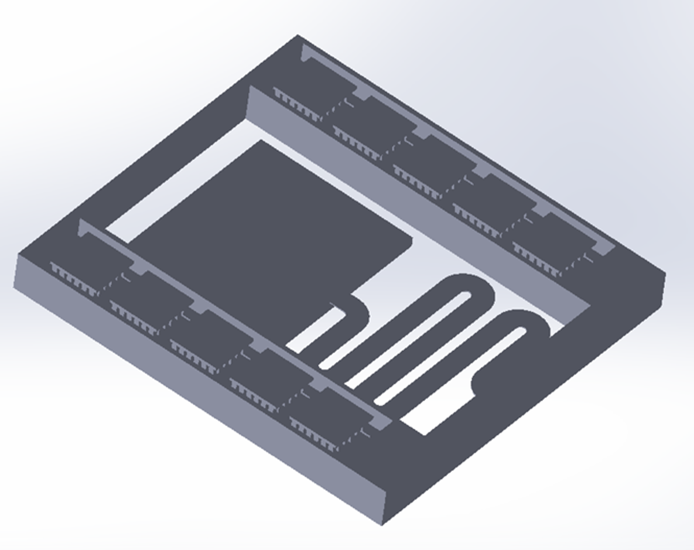
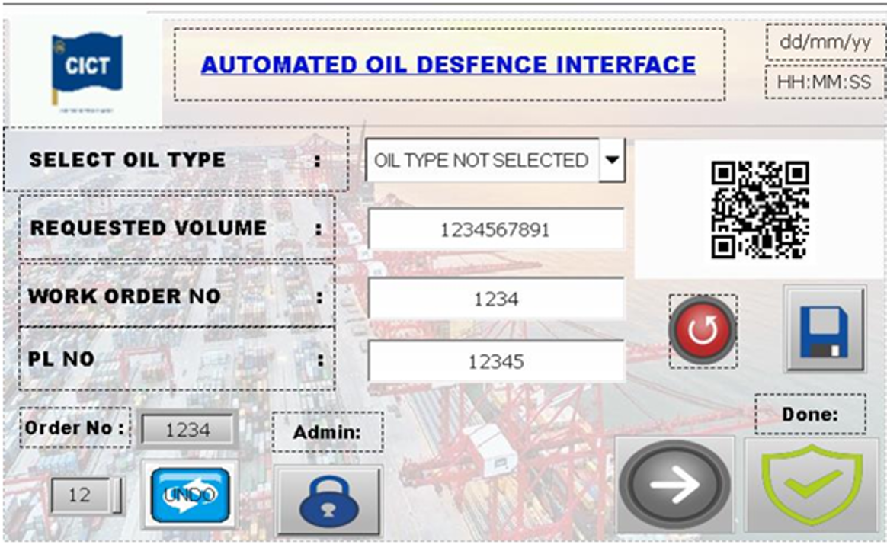
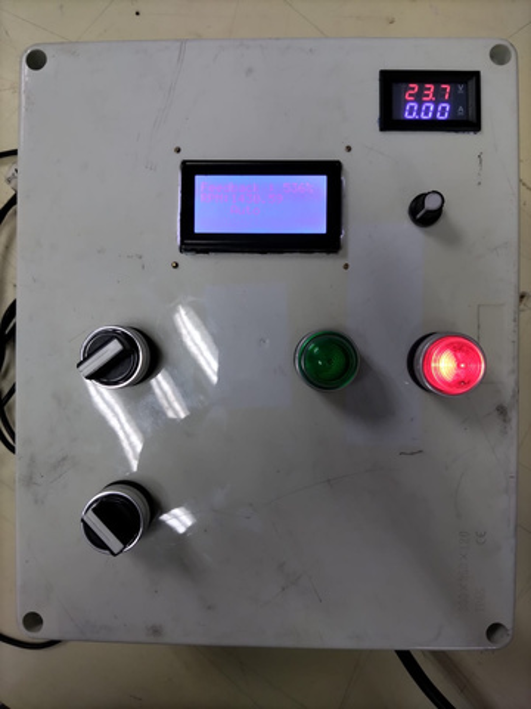

Temporary Lecturer @ University of Moratuwa | Mechatronics Engineer
Highly motivated Mechanical Engineering graduate specialized in Mechatronics at the University of Moratuwa, Sri Lanka, with a strong foundation in Robotics, Machine Learning for computer vision, neural-network-based modeling, Multi-body dynamics, Control systems and currently serve as a graduate instructor for the same university while actively seeking PhD scholarship opportunities. My research interests include Robotics, Autonomous Systems, Industry 4.0, and AI-driven Mechatronic Systems.

1st Place - Undergraduate Inventor 2025. Automated hematocrit detection.

Six-wheeled rocker-bogie suspension. Real-time detection via MediaPipe.

This project involves designing and developing a miniature autonomous taxi robot that can transport a passenger to a selected destination using a predefined path

This project focuses on developing an IoT-based temperature monitoring and automatic fan control system that adjusts fan speed according to environmental temperature

Designed a double S-shaped MEMS structure for vibration energy harvesting and integrated a thermoelectric arrays for thermal energy extraction.

This project involves the development of a fully automated oil dispensing system using PLC-HMI integration to improve accuracy and operational efficiency. The system incorporates QR-coded work orders and barcode-based user verification for secure and traceable dispensing. A closed-loop control mechanism is implemented using solenoid valves with weight-sensor feedback to ensure precise oil measurement, while bidirectional communication between the PLC and HMI enables real-time monitoring, control, and data visualization.

Developed a microcontroller-based inverter cooling fan testing device with PWM-based speed controlling.
Design and manufacturing optimization of a highspeed pcv centrifuge machine.
View PaperVision based pcv analyzer for hct detecting with a rotor for a medical centrifuge.
App No: 14245No: 360/2, Ambagala, Horana, Sri Lanka
+94 77 040 1823